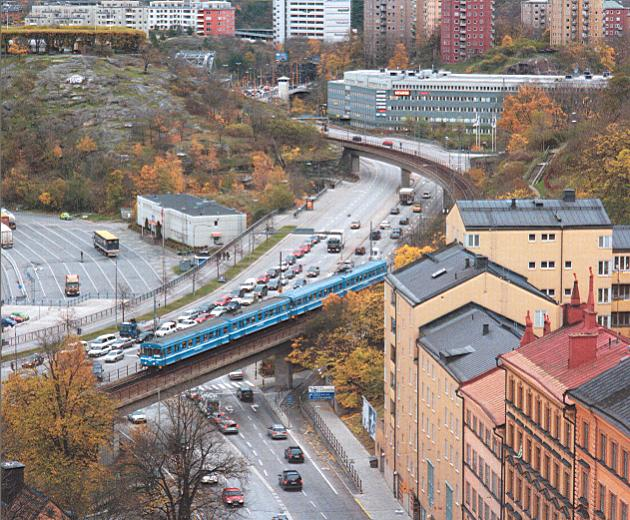

|
 Gränsland. Ett saltsjöbanetåg passerar just den bågformade viadukten och kommer snart att försvinna i den långa Stadsgårdstunneln på sin väg mot Slussen. !893 gjorde det första tåget sin entré och redan 1913 elektrifierades järnvägen. Husen i förgrunden på Folkungagatan markerar knivskarpt stenstadens början och slut. Fåfängan, den populära kaffeserveringen med stadens bästa utsikt, ligger på det gamla "Södra Skansberget till vänster i bild.(Flygfoto Stockholm, Nils-Åke Siversson, Roland Svensson, 2002) |